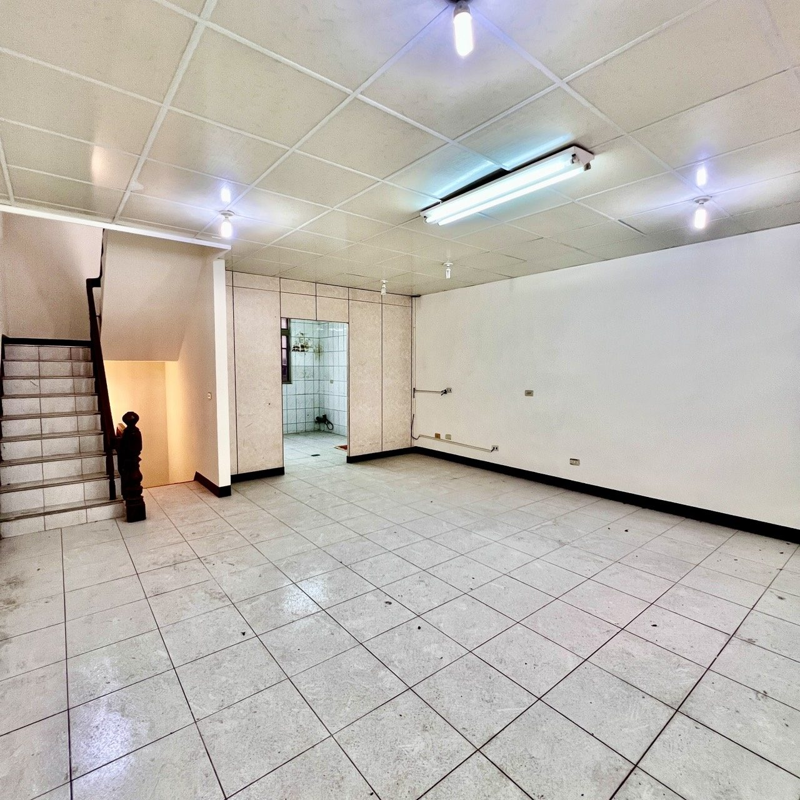

1 / 13房屋亮點
- 近湖口老街
- 近湖口火車站
- 室內雙車位
- 4樓開放空間＋大露台
房屋資料
- 型態
- 別墅
- 格局
- 4房2廳4衛
- 屋齡
- 約 32 年
- 樓層
- B1～4樓（共4樓）
- 車位
- 室內雙車位
- 使用分區
- 甲種建築用地
- 臨路
- 約 5 米
- 朝向
- 朝西北
- 位置
- 新竹縣湖口鄉乾興路
坪數說明
- 權狀坪數
- 69.18 坪
- 主建物
- 62.9 坪
- 土地坪數
- 27.42 坪
屋況特色
走路就到湖口老街，離湖口火車站也近，生活機能成熟。
別墅設計、空間寬敞，還有室內雙車位，家裡車多也停得下。
- B1 到 4 樓，4 房 4 衛，一家人住得開
- 4 樓整層開放空間加大露台，可以當起居室或種花
- 學區湖口國小，附近有湖口公有零售市場、大湖口車站公園
- 目前空屋，方便約看
買這間，錢要怎麼準備？
自備款（2 成）217.6 萬
貸款（8 成）870.4 萬
每月房貸（30 年、2.2%）33,049 元